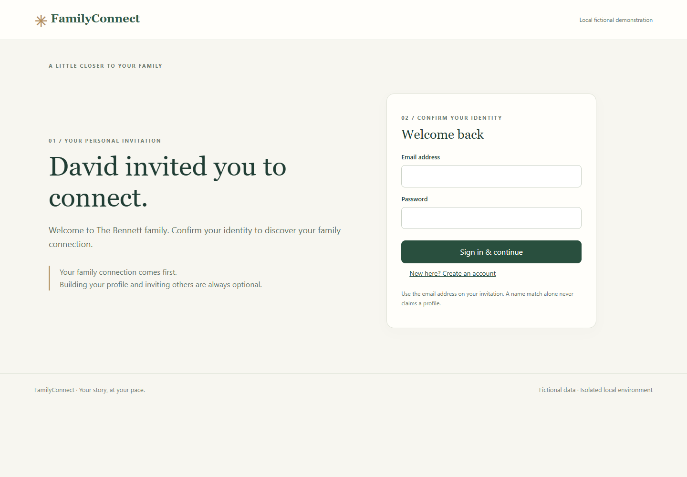
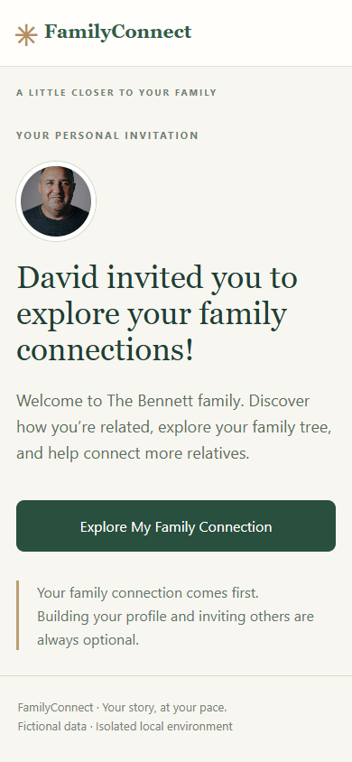
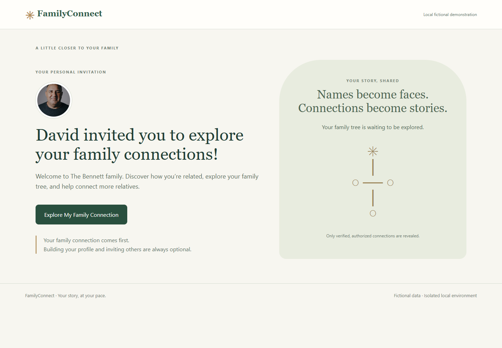
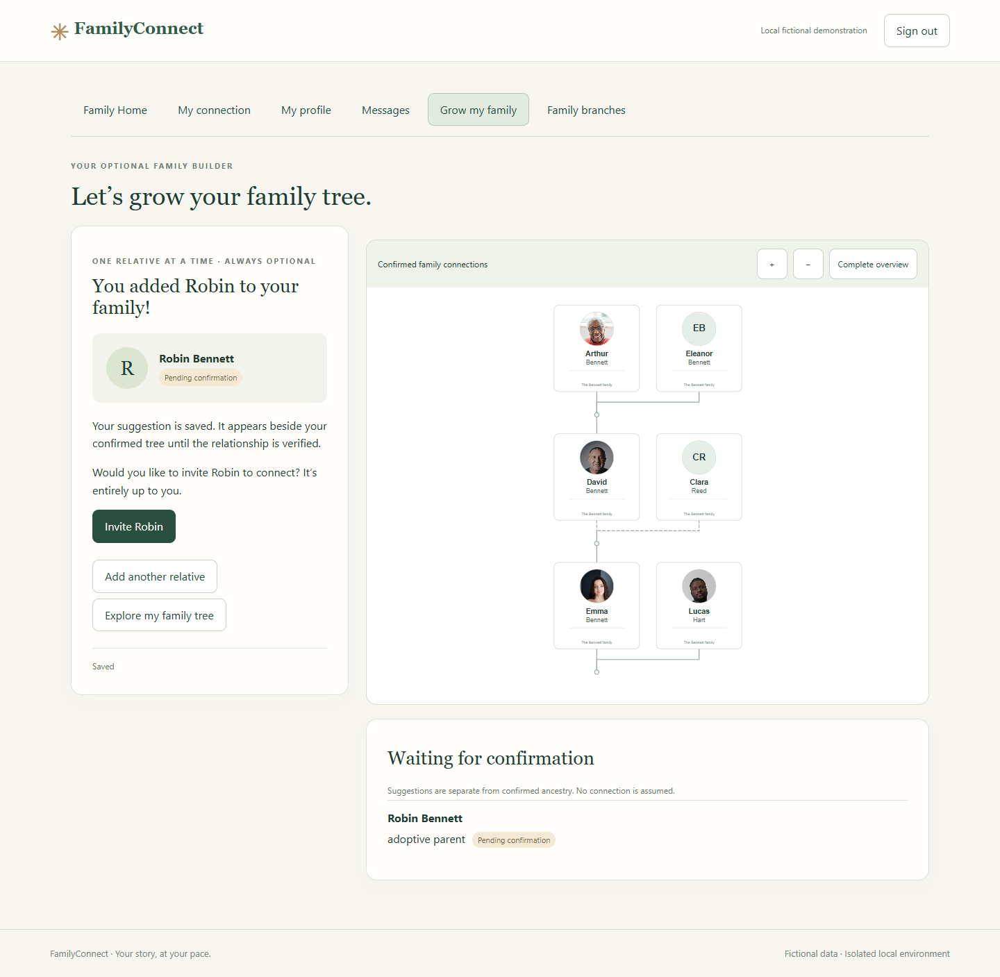
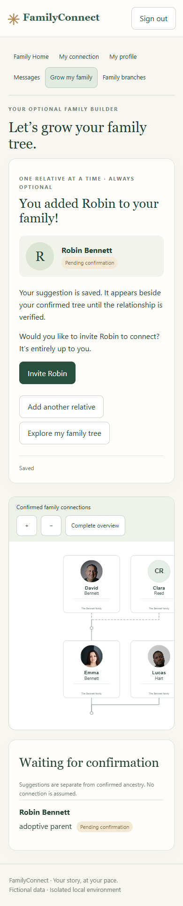

FAMILYCONNECT · PHASE 6B · 20 OCTOBER 2026 LOCAL / 21 OCTOBER UTC
A personal invitation.
A simpler way to grow your family.
Local implementation ready for visual review. Hosted Supabase was not accessed or modified. No real invitations were sent. No deployment or Phase 7 work performed.
Phase 6B replaces the initial login-heavy experience and long builder form with a welcoming invitation, a confirmed connection reveal, and one or two questions at a time. The existing family graph, automatic layout worker, relationship engine, and printable templates remain in place.
Open local app · Review instructions · Screenshot gallery · Launch-readiness checklist
What changed
| Before Phase 6B | Now |
|---|
| Invitation and authentication form compete for attention. | Personal message, explicitly opted-in approved portrait, and Explore My Family Connection. Authentication appears after choosing to continue. |
| Mobile tree appears after several controls. | Confirmed relationship and highlighted tree appear first; optional discovery and building follow. |
| Relationship, existing record, names and age all appear together. | Short parent, sibling, child and other-relative conversations; optional questions, Back, autosave and Save & explore. |
| Nina appears twice with only a first name visible. | Full names distinguish separate people. Existing-profile suggestions, explicit same-name distinction, stable retry identifiers and database uniqueness prevent accidental duplicates. |
| Invitation form appears immediately after adding an adult. | Choose Invite, Add another relative or Explore. Email and sharing controls appear only after Invite. |
| “Claimed profile A/B” and prominent administrator controls. | Plain family-tree labels, clear sharing limits, and separate administrator review controls. |
Before / after: invitation

Before · Phase 6
After · mobile-first invitationVerification
| Completed command | Result |
|---|
npm run test:phase6 | 29 passed |
node scripts/test-phase6-consent.mjs | 12 passed |
node scripts/test-phase6-adapter.mjs | 3 passed |
npm run test:phase6b | 17 passed |
npm run test:phase6b:browser | 27 passed |
npm run test:family | 53 passed |
npm run test:family:browser | 11 passed |
npm run test:family:premium | 5 passed |
The Phase 6B browser suite exercised signup, local email verification, secure claim, reveal, all four builder choices, skipping/resuming, double-click submission, authorized matches, pending assertions, clipboard and share links, a second invitation in the same tab, and connection requests. Tested widths: 360, 390, 430, 1280 and 1440 pixels; reduced-height viewport and keyboard Tab navigation also checked. No page overflow or runtime errors in the final journeys.
Automated invitation-to-reveal measurements: desktop 4.35s total (4.26s excluding local email wait); mobile 2.79s total (2.76s excluding local email wait). These include screenshot overhead and are not human completion-time measurements. The 30–60 second builder target remains subject to human testing.
Evidence: browser checks, new security and duplicate tests, 29 existing security checks, 12 existing consent checks, actual graph adapter, regression summary.
Security findings and corrections
- Two pre-existing Nina records had two distinct full names; there were zero equivalent pending relationship groups. The former evidence script appended a timestamp to each test surname. No records were merged or deleted. Count-only investigation.
- Client retries previously replaced the supplied request ID. The client now preserves it; server receipts bind IDs to request content, and a network lock plus a direction-normalized unique pending-assertion index handles concurrent requests. Same names require explicit distinction rather than automatic merging.
- Invitation metadata is withheld until independent approval. Portraits additionally require owner opt-in, an adult inviter, a valid unused invitation and the existing local fictional-asset allowlist. Arbitrary remote or private-storage URLs are not exposed.
- All existing membership, claim, minor, guardian, independent-review and bilateral network-consent checks still pass. New receipt tables have RLS and no client grants. Private mutation helpers cannot bypass the public approval wrapper.
- Browser testing found that a second invitation opened in the same tab did not update the active token. A hash-change continuation handler fixes this; both desktop and mobile now claim a second network profile and request a connection.
- The old adapter test copied a subset of adapter logic and omitted edge filtering across networks. It now imports the actual application adapter and validates each authorized network. Application edge filtering was already correct.
- An initial local Auth request reported “JWT issued at future”; fresh runs passed. If it recurs, check Docker/host clock synchronization. No authentication checks were disabled.
Preservation and rollback
The original working source, local migration/configuration files and a custom-format dump of the fictional local database were saved before changes in output/phase6b/private/checkpoint/. A manifest records the source commit and dump SHA-256. The archive catalog is readable; this is not a tested restore rehearsal. The backup contains local Auth material and is Git-ignored.
Only local migrations 20261021000600 and 20261021000700 were added. To roll back, stop the Phase 6B frontend, preserve any newer fictional data, restore the checkpoint into a separate disposable local stack, validate it, then switch the local app to that restored environment. Do not run destructive restoration over hosted Supabase. No hosted migration or rollback is proposed by this report.
Limitations and beta blockers
- Actual iPhone/Android keyboards, assistive technology, native sharing apps and external delivery need human/device testing. Browser emulation and URI checks do not certify those integrations.
- Autosave remains last-write-wins between concurrent tabs. Use the Saved indicator or Save & explore before leaving; an abrupt close during the debounce or offline period may lose unsaved input.
- Sibling, step and extended-relative suggestions stay pending until sufficient supporting parentage is independently verified. A new suggestion is shown beside the confirmed tree, without a fabricated ancestry line.
- Network connections share only explicitly consented profiles, not entire branches. Human identity and guardian review still require an operational verification procedure.
- Approved portraits use existing licensed fictional fixture assets; private-photo upload and storage workflows remain outside this phase.
- Explicit invitation decline, hosted legacy-policy remediation, migration/account-preservation rehearsal, backup restoration, real-device testing, production email/recovery, privacy and correction/deletion procedures remain beta blockers. See the readiness checklist for scope and evidence.
- Local tooling still warns about Node 18 deprecation. Upgrade and revalidate the runtime before a release candidate.
Review locally
The app is available at 127.0.0.1:5176/phase6.html. For a fresh invitation, open the Git-ignored output/phase6b/private/review-invitation.json on this computer. It contains an unused local link, fictional email and suggested test password; these are intentionally excluded from this report.
- Open that invitation in a private browser window. Choose Explore My Family Connection, then Create an account with the fictional email.
- Open local Mailpit, find its verification email, and open the verification link in the original invitation tab. Confirm identity to reveal Emma’s supported connection to David.
- Try Grow my family, Back, Save & explore, a page reload, existing-name matching and voluntary invitations. Use fictional recipients only; no sharing action is needed to continue.
- To inspect a completed two-network example, use the fictional account in
output/phase6b/private/desktop-review.json. Choose Family branches. The request intentionally awaits independent consent.
If services have stopped, from the repository run:
supabase start --workdir local/phase6
npm run dev:phase6
Use npm run demo:phase6b to create another unused fictional invitation. Reproduce checks with:
npm run test:phase6
node scripts/test-phase6-consent.mjs
node scripts/test-phase6-adapter.mjs
npm run test:phase6b
npm run test:phase6b:browser
npm run test:family
npm run test:family:browser
npm run test:family:premium
npm run build:phase6
Tests add fresh fictional records instead of resetting prior records. Repeated security runs can legitimately hit invitation rate limits; wait for the window rather than disabling limits. The old Phase 6 capture-only scripts are superseded by test:phase6b:browser.
Actual rendered screens
Desktop and mobile screenshots were inspected. Initial loading-state captures were replaced with settled tree layouts. The relative-added view deliberately includes the optional invitation suggestion. Click any image for full resolution.
Personal invitation

Desktop · actual Chrome renderMobile · actual Chrome renderConfirmed family connection
Sibling relationship question
Relative-added confirmation

Desktop · actual Chrome render Mobile · actual Chrome render
Mobile · actual Chrome renderVoluntary invitation suggestion
 Desktop · actual Chrome render
Desktop · actual Chrome render
Mobile · actual Chrome renderConnected family branches
Stopped at Phase 6B. Awaiting your visual review before hosted deployment or Phase 7.